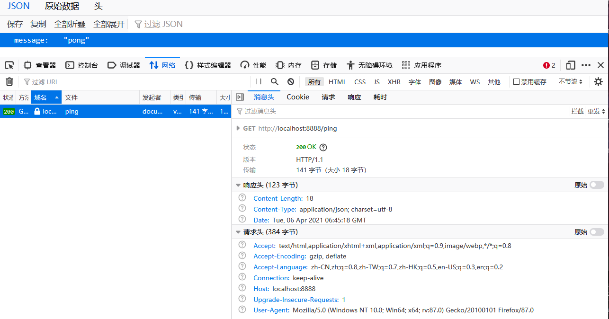
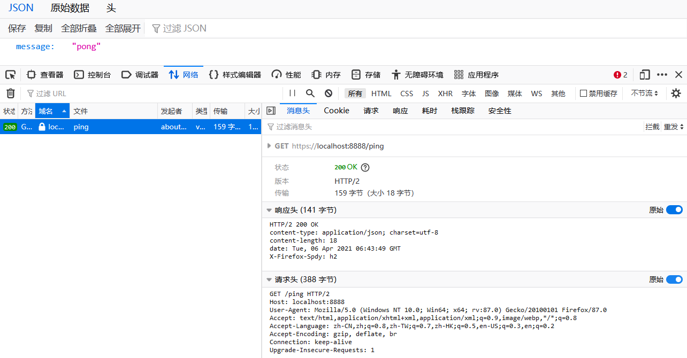

HTTP/0.9
1991年发布的HTTP/0.9只是一个草案，纯文本格式。蒂姆.伯纳斯.李 最初设想的系统里的文档都是只读的，所以只允许用”GET”动作从服务器上获取HTML文档，并且在响应请求之后立即关闭连接，功能非常有限。此时的HTTP协议没有请求头和请求体的概念，只能用于只读文档请求。
HTTP/1.0
时隔5年，发布的HTTP/1.0
- 规定了HTTP的请求头，请求体，以及响应头，相应体的概念，并在Header里引入了协议版本号
- 支持了GET，POST，HEAD等多种方法。
- 增加了HTTP相应状态码的概念
- 传输从数据不再仅限于文本
此时的HTTP协议已经和如今的HTTP协议极为类似了。HTTP/1.0采用了短链接，即每次请求一个资源都需要建立一个TCP请求，完成一整套握手和挥手的过程。如：当有100个图片资源时，就会发起100个TCP请求。频繁的连接建立与断开极大消耗了资源。
HTTP/1.1
为此，HTTP/1.1请求头多出了Connection: Keep-Alive属性，允许浏览器与远端服务器建立长连接。同时还加入Timeout属性来控制超时。
此时请求100个图片资源只要建立一次TCP连接，因此极大的提升了效率。HTTP/1.1还允许浏览器同时建立多个连接，一个浏览器默认的连接上限为6个。浏览器请求数据的方式从HTTP/1.0的串行短链接转变为HTTP/1.1的串行并行共存的长连接。
此外HTTP/1.1还进行了多项优化：
- 增加了PUT，DELETE等方法
- 允许数据分块（chunk），以应对传输大文件
- 强制
Host属性，使得一台物理机可以通过VirtualHost部署多个站点
HTTP/1.1增肌了pipeline，允许一个TCP连接中串行的执行多个HTTP请求。相应慢的请求会阻塞后续的请求，从而降低了性能。这个问题将在HTTP/2中解决。
HTTP/2
随着互联网的发展，传输的数据量越来越大。2015年推出的HTTP/2主要优化了性能：
- 对原本的明文数据采用二进制压缩
- 允许IO多路复用
- 模仿BT协议，将数据打散成块，使用单链接+帧的方式传输
- 对越来越大的头部数据进行压缩与缓存
- 服务端可以主动push，一个请求可以有多个返回。在HTTP/2中基于Google的SPDY协议。
可以用这个网站测试HTTP/1.1和HTTP/2的性能区别：https://http2.akamai.com/demo
可以看出在加载一张由多个小图片构成的大图的时候，HTTP/2比HTTP/1.1快了好几倍。开发者工具中网络连接显示HTTP/1.1的方式浏览器建立了多个连接，而HTTP/2下浏览器只建立了一个连接。
HTTP/2本身支持非加密的HTTP协议（h2c），但大部分浏览器都之实现了通过TLS加密的HTTP/2协议（h2），所以实际上基本是强制要求HTTPS。以go的gin框架为例，他在HTTPS下允许会默认执行HTTP/2协议。
新建一个gin项目，首先测试HTTP协议：package main
import "github.com/gin-gonic/gin"
func main() {
r := gin.Default()
r.GET("/ping", func(c *gin.Context) {
c.JSON(200, gin.H{
"message": "pong",
})
})
r.Run("0.0.0.0:8888")
}
启动后在firefox输入http://localhost:8888/ping，看到响应头版本为HTTP/1.1。

接下来测试HTTPS下的响应头。在gin项目下生成HTTPS key和pem文件：openssl genrsa -out ./server.key 2048
openssl req -new -x509 -key ./server.key -out ./server.pem -days 365
代码修改为：package main
import "github.com/gin-gonic/gin"
func main() {
r := gin.Default()
r.GET("/ping", func(c *gin.Context) {
c.JSON(200, gin.H{
"message": "pong",
})
})
// r.Run("0.0.0.0:8888")
r.RunTLS("0.0.0.0:8888","./server.pem","./server.key")
}
此时在浏览器改用HTTPS协议请求刚才的接口：https://localhost:8888/ping，发现请求头已经变成了HTTP/2

如果在Chrome浏览器上，会无法查看HTTP/2协议的原始请求头，这是因为HTTP/2是二进制传输。如果看到Chrome的开发者工具中一个请求的头没有View Source选项，那一般就是HTTP/2了。
HTTP/3
HTTP3.0从TCP协议切换到UDP协议。
参考文档：